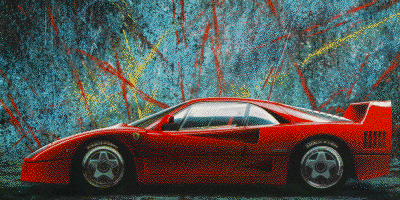

|  | CAR's Research Focus |
ILP Architecture: Instruction-level parallelism (ILP) is the principal architectural mechanism by which microprocessors are currently maintaining the extraordinary rate of increase in performance that we have come to expect. Previously, the work of this group was focused on identifying advanced ILP architectural features, for the next generation of microprocessors, that improve the performance of VLIW processors on sequential, branch-intensive, pointer-manipulating programs. The resulting style of processor architecture is known as EPIC (Explicitly Parallel Instruction Computing) and is exemplified by the HPL-PD architecture. The Intel IA-64 ISA is the first commercial instance of the EPIC style of architecture.
ILP Compilers: EPIC processors require compilers which go well beyond conventional optimizing compilers, employing techniques to expose, enhance and exploit ILP, as well as techniques for programmatically managing the cache hierarchy. Many of these compiler techniques either depend upon, or are made necessary by, the above mentioned advanced ILP architectural features. Until recently, the primary emphasis of CAR has been on developing advanced compiler techniques for local and global scheduling, speculative and predicated code motion, memory disambiguation, load-store elimination, and critical path length reduction. In addition, CAR has been developing an understanding of the significantly different way in which ILP compilers must be structured in comparison to traditional optimizing compilers. Elcor, our research compiler infra-structurem embodies all of the research and engineering that CAR has performed as part of this project. Elcor constitutes most of the machine-dependent part of Trimaran.
Automatic design of application-specific processsors: Currently, the emphasis of this group is on the PICO project. The goal of the PICO project is to create the capability for automatically architecting custom, application-specific EPIC and systolic processors for embedded applications, as well as for automatically retargeting the EPIC compiler to those custom EPIC processors. The intended application of this technology is in supplying highly cost-effective computing capabilities to smart products with sharply reduced time-to-market.